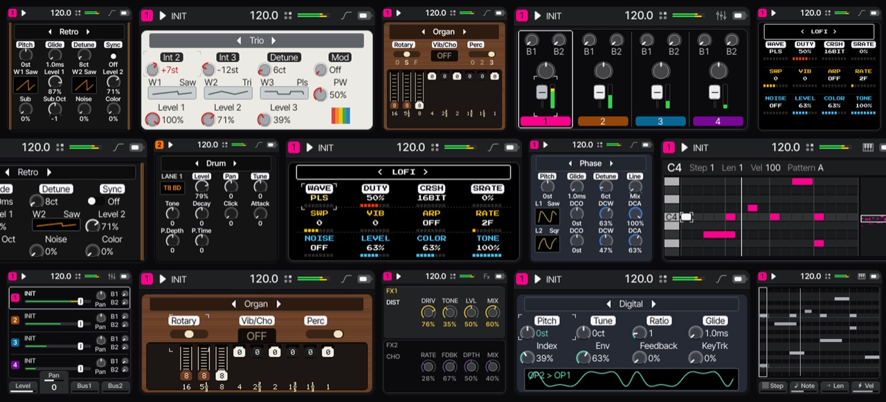

Install Fune
Before you install
Fune is custom firmware (CFW). It replaces the device's own firmware. M-VAVE's updater puts the stock firmware back.
This is an alpha. It isn't finished, and song and preset formats may change.
- 1 Connect
- 2 Install
- 3 Play
Needs Chrome or Edge on a computer.
Help
- Close other apps using the device's MIDI.
- Stopped half way? Replug, press Install again.
- Back to stock: M-VAVE's updater.
- Stock bootloader only. SMK-37: Alpha.